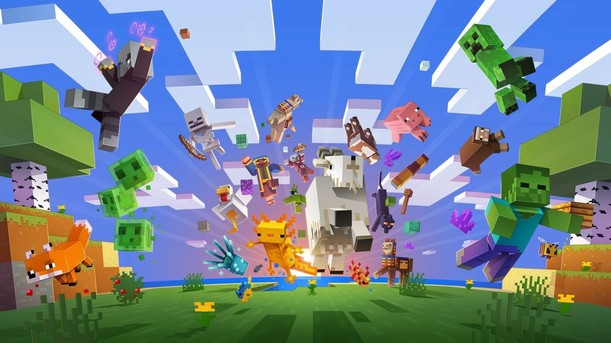
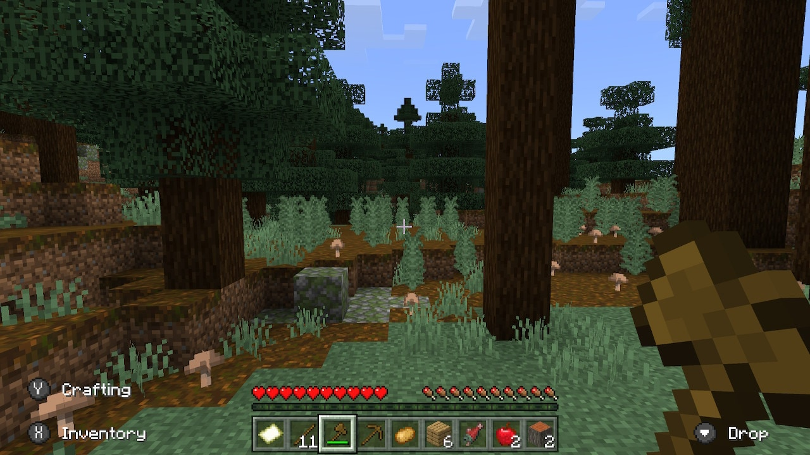
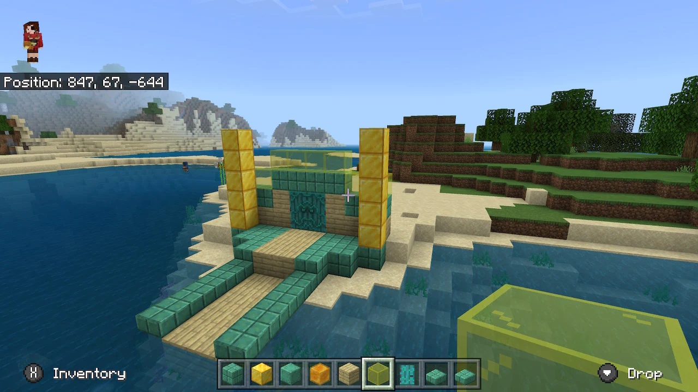
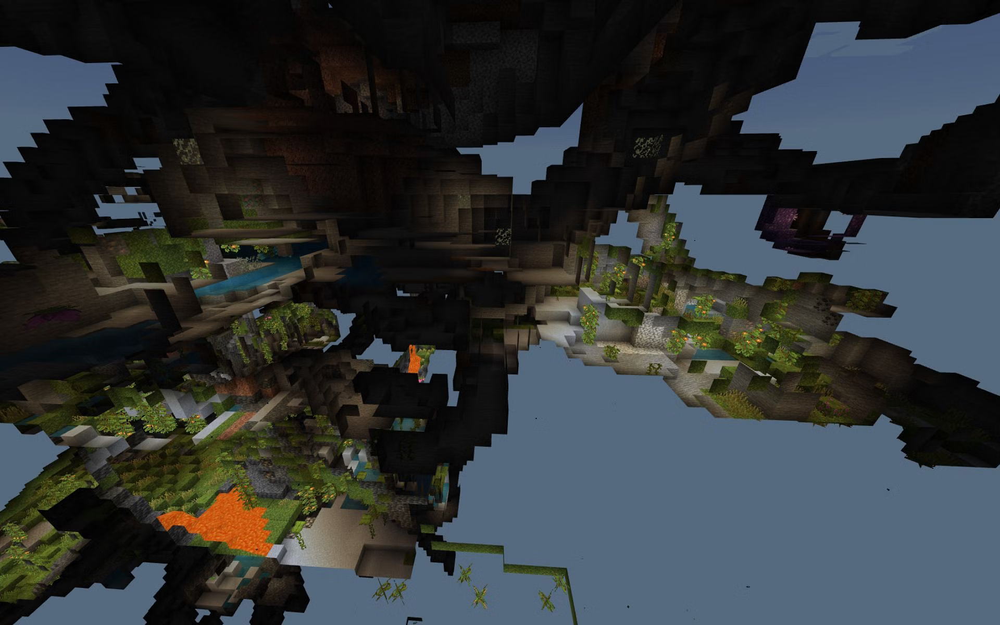
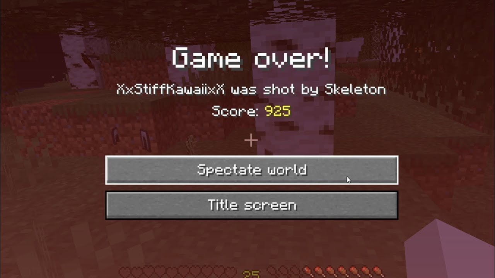
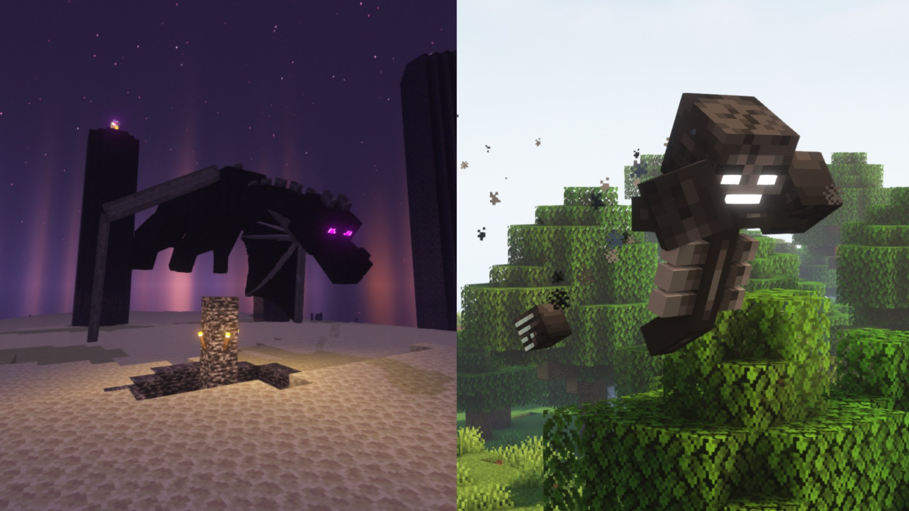
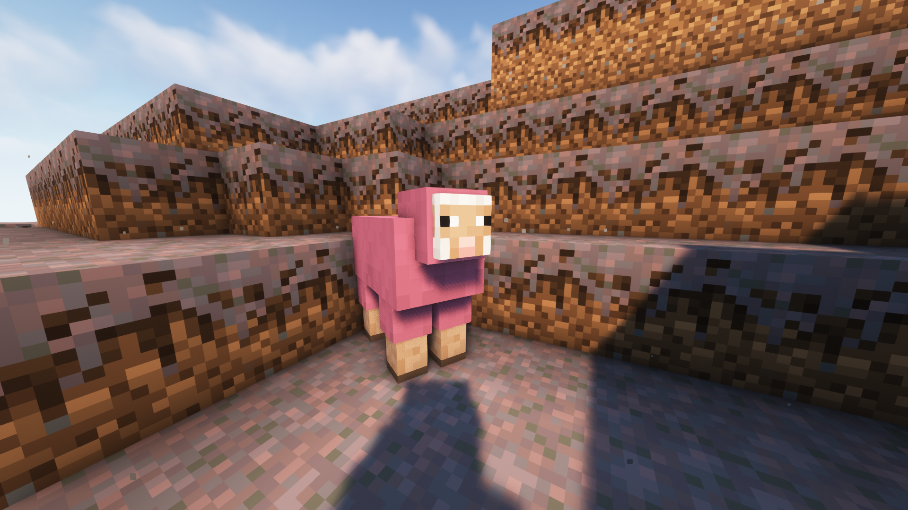
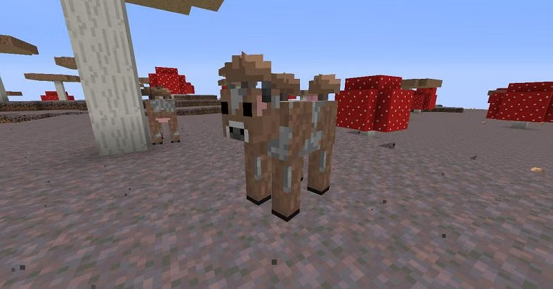

Minecraft
What is Minecraft?
Minecraft is a sandbox game developed by Mojang Studios. The game was created by Markus "Notch" Persson in the Java programming language. Following several early private testing versions, it was first made public in May 2009 before being fully released in November 2011, with Notch stepping down and Jens "Jeb" Bergensten taking over development. Minecraft is the best-selling video game in history, with over 238 million copies sold and nearly 140 million monthly active players as of 2021 and has been ported to several platforms.
Click the image to learn more about Minecrafts history.
Gameplay
Gameplay in most game modes of Minecraft consists mainly of adding and destroying a variety of different blocks in a randomly generated world.
With these blocks, players can manipulate the world around them, building and destroying structures. As gameplay in Minecraft is so open and unguided, players often set their own goals and play the game as they see fit. An example of this is the Minecraft minigame, Spleef.
Game Modes
Survival mode
In this mode, players must gather all their materials to build, craft items and tools and gain experience points. There is a health, hunger, and armor bar, an inventory, and also a oxygen bar when underwater, suffocating, or in lava. If a player runs out of hearts (health), the player dies and returns to the spawn point.
Creative mode
This mode is for creating structures and experimenting. The player has access to an infinite amount of almost all blocks and items available and can destroy them instantly. Players cannot die (except when falling into the Void in Java Edition), health is not a concern, and players can fly. The player has access to items not available in Survival mode, such as spawn eggs.
Adventure mode
Players can interact with objects such as levers and buttons, and can interact with mobs. However, they can break blocks only with certain tools, and place only certain blocks, as determined by the designer. This mode is good for adventure maps.
Spectator mode
When in Spectator mode, players can clip through blocks and fly freely. The player can't interact with blocks, entities or their inventory.
In Java Edition, the player can enter the perspective of other entities by left-clicking on them, and are invisible to all players and mobs except for other spectators. When in third-person mode, a player appears as a transparent floating head. The player can use the scroll wheel to adjust the flying speed, unlike flying in Creative mode.
Hardcore mode
In this mode, which plays in the same way as Survival mode, the difficulty level is permanently set to "Hard", and the player does not respawn after dying. After death, the player cannot interact with the world again and must either delete the map or permanently switch to Spectator mode. Hardcore is not technically a game mode as it cannot be enabled with the /gamemode command. Hardcore mode is only available on Java Minecraft and not Bedrock Minecraft.
Mobs
A mob is an AI-driven game entity resembling a living creature. The term "mob" is short for "mobile entity". All mobs can be attacked and hurt (from falling, attacked by a player or another mob, falling into the void, hit by an arrow, etc), and have some form of voluntary movement. Different types of mobs often have unique AI and loot.
Passive mobs
Passive mobs are harmless mobs (except for pufferfish) that do not attempt to attack the player, even when provoked or attacked. Most of them can be bred or tamed.
Click here to get full passive mobs list.
Neutral mobs
Neutral mobs are sometimes passive and sometimes hostile toward the player. All of these mobs (except goats) are provoked when the player attacks it first. Some mobs may also be naturally hostile with provocation, and some mobs also have some additional way to be provoked.
Click here to get full neutral mobs list.
Hostile mobs
Hostile mobs are dangerous, aggressive mobs that always attack the player within their respective detection ranges. Some passive mobs such as chickens and skeleton horses can be hostile if ridden by a hostile mob on rare occasions.
Click here to get full hostile mobs list.
Boss mobs
Boss mobs are special hostile mobs that are distinctly more dangerous and tougher than other mobs. They do not spawn randomly, and are confronted intentionally. All of them also have a boss bar featuring their name and health. Boss mobs provide unique challenges but also equivalent rewards.
Image of Enderdragon and Wither, the two boss mobs.
Fun facts!
Rarest Sheep
Pink Sheep are the rarest with only a 0.164% chance of naturally spawning.
Rarest Cow
Mooshrooms are a rare variant of cows that spawn in mushroom biomes. When a mooshroom is hit by lightning, it turns into brown mooshrooms. Gamers can get suspicious stew by feeding a flower to a brown mooshroom. As these are rare mobs, the chances of getting struck by lightning and turning into a brown mooshroom are even less.
Rarest Item
The Rarest item in Minecraft is the Dragon Egg. It only appears when the Ender Dragon has been defeated, at which point, the Dragon Egg will appear on the exit portal!